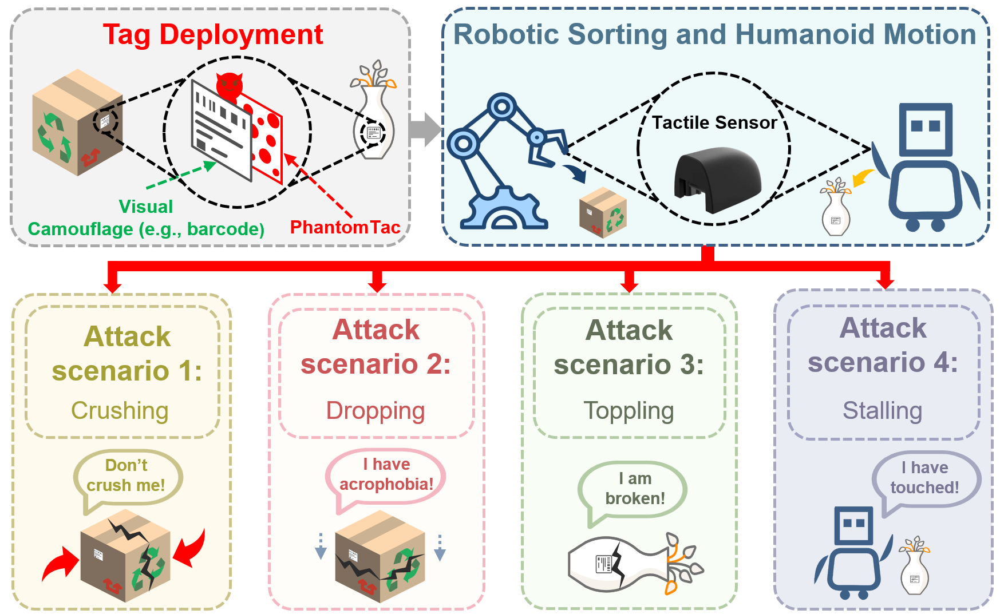

Structure image placeholder
Upload to figures/magnetic-tactile-structure.png
Upload to figures/magnetic-tactile-structure.png
(a) The compressed and shear states characterize normal and shear forces, respectively.
Tactile perception is crucial for precise robotic manipulation and robotic arm grasping, providing an important foundation for dexterous, closed-loop force control. Among various tactile sensing techniques, magnetic tactile sensors stand out thanks to their fine-grained, three-dimensional force perception capability and strong robustness against visual occlusion. In this study, we discover a physical loophole called PhantomTac in magnetic tactile sensors. The attacker can alter the magnetic field, thus spoofing the force interpreted by magnetic tactile sensors. The attacker can stealthily deploy such an attack by simply attaching a thin (the thickness is around 0.5 mm), battery-free magnetic tag to the surface of an object. Hence, the attack tag can be easily concealed by a barcode sticker. Such an attack scheme is ``deploy-and-forget'' --- the attack can deploy the tag and leave. When a robotic hand is picking up an object, it may severely damage the object. Specifically, spoofing the normal force can crush the object, whereas shear force spoofing can lead to a loose grip, thus dropping the object. Compared with directly sabotaging the robotic hand, PhantomTac is much more concealed as the attacker does not need access to the device. We performed extensive reverse-engineering efforts to characterize the sensing mechanism of commercial-off-the-shelf tactile sensors and proposed a practical tag design. End-to-end evaluations conducted on real robots and robotic arms demonstrate that our attack can bypass existing anti-interference mechanisms and effectively hijack their closed-loop control processes, achieving an attack success rate exceeding 95% when the grasping error tolerance is bounded within 8 mm. Finally, based on the limitations of existing anti-magnetic interference mechanisms, we propose and evaluate a novel defense mechanism to effectively mitigate such physical-layer security threats.

Magnetic tactile sensors convert mechanical forces into measurable magnetic-field variations. As shown in Figure (a), a typical sensor consists of a flexible elastomer, an embedded magnet, and an underlying array of magnetometers. When external pressure is applied, the elastomer deforms under compression, bending, or shear, changing the relative position and pose between the magnet and the sensing units. These changes alter the local magnetic-field distribution. The measured magnetic signals are then mapped to tactile information, such as contact location, normal force, shear force, and slip.
The demo video shows the real use of a magnetic tactile sensor (PX6AX-GEN3-MC-M2020-Elite). It demonstrates the real-time response to physical contact. When the sensor is pressed, the system reports force variations along multiple axes.

PhantomTac uses a passive magnetic tag to perturb the magnetic field around a tactile sensor, thereby spoofing tactile feedback and hijacking closed-loop robotic manipulation.
The demo video shows the camouflage surface, the miniature magnet-array surface, the side view, and a close-up view of PhantomTac after deployment. The camouflage surface can take the form of common stickers, such as a QR code, blank paper, a shipping label, or a cartoon sticker. The magnet-array surface is used to arrange miniature magnets to generate a specific magnetic field and inject targeted spoofed forces. The side view shows that PhantomTac can be as thin as a piece of paper. In the close-up view after deployment, PhantomTac does not introduce an obvious protrusion and appears similar to a normal sticker. These properties make PhantomTac highly easy to disguise and deploy.
The following six demo videos show tactile feedback under normal conditions and representative physical consequences caused by spoofed tactile feedback. The experiments in the first group are conducted on the Dofbot-pi4B platform, while those in the second group are conducted on the Unitree G1 platform.
Without PhantomTac. The robotic arm completes the grasping task normally. (The object is well-preserved)
With PhantomTac. The robotic arm stops clamping in advance. (The object is dropped)
With PhantomTac. The robotic arm delays stopping the clamp. (The object is crushed)
Without PhantomTac. The robot completes collision detection normally. (Normal contact with the vase)
With PhantomTac. The robot perceives the collision in advance. (Unable to complete subsequent tasks)
With PhantomTac. The robot perceives the collision with a delay. (The vase topples)
We evaluated products from two mainstream magnetic tactile sensor vendors, including XELA uSPa 46 and PaXini PX6AX-GEN3-MC-M2020-Elite, PX6AX-GEN3-IP-S1610-Elite, and PX6AX-GEN3-DP-S2015-Elite. All tested sensors are vulnerable to PhantomTac attacks.
PhantomTac may introduce a slight protrusion because it deploys small magnets. In theory, existing visual inspection systems could detect such protrusions. However, deploying such a visual inspection system would be extremely costly.
PhantomTac can inject both normal or shear forces into magnetic tactile sensors, thereby hijacking tactile-feedback-based closed-loop force control in robots or robotic arms. This prevents the system from accurately interpreting contact forces and can lead to object damage. For example, the robot may continuously apply excessive pressure and crush the object, or it may start transporting the object before achieving a stable grasp, causing the object to be dropped and damaged.
A basic defense is to cross-check tactile readings with independent robot proprioceptive signals, such as joint torques, gripper motor currents, end-effector motion, and gripper velocity. Real contact should cause consistent changes across these signals. If the tactile sensor reports contact without corresponding motion or load changes, the system can flag it as false contact. Conversely, if proprioceptive signals indicate contact while tactile readings remain low, the system can stop further force increase or enter a safe recovery mode.
The following files are provided for artifact review. The usage is as follows:
Dataset
The dataset obtained by reverse engineering with a 2.5 mm diameter magnet.
Download →
Dataset
The dataset obtained by reverse engineering with a 3 mm diameter magnet.
Download →
Dataset
Normal force readings during benign grasping of Dofbot-pi4B.
Download →
Dataset
Normal force readings during positive normal-force injection (Dofbot-pi4B).
Download →
Dataset
Normal force readings during negative normal-force injection (Dofbot-pi4B).
Download →
Dataset
Normal force readings of Unitree G1 during benign collision detection.
Download →
Dataset
Normal force readings during positive normal-force injection (Unitree G1).
Download →
Dataset
Normal force readings during negative normal-force injection (Unitree G1).
Download →
Source code
RBF data fitting source code.
Download →
Source code
RBF model blind test source code.
Download →
Source code
Contour plot code for Fx, Fy and Fz based on the RBF model.
Download →
Source code
Source code for plotting spatial heatmaps of three-dimensional forces using the reverse engineering dataset.
Download →